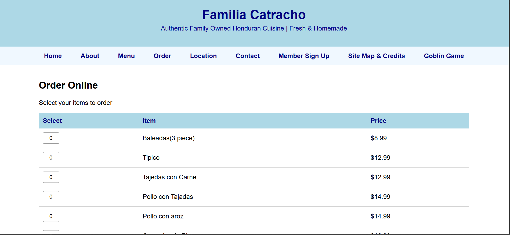
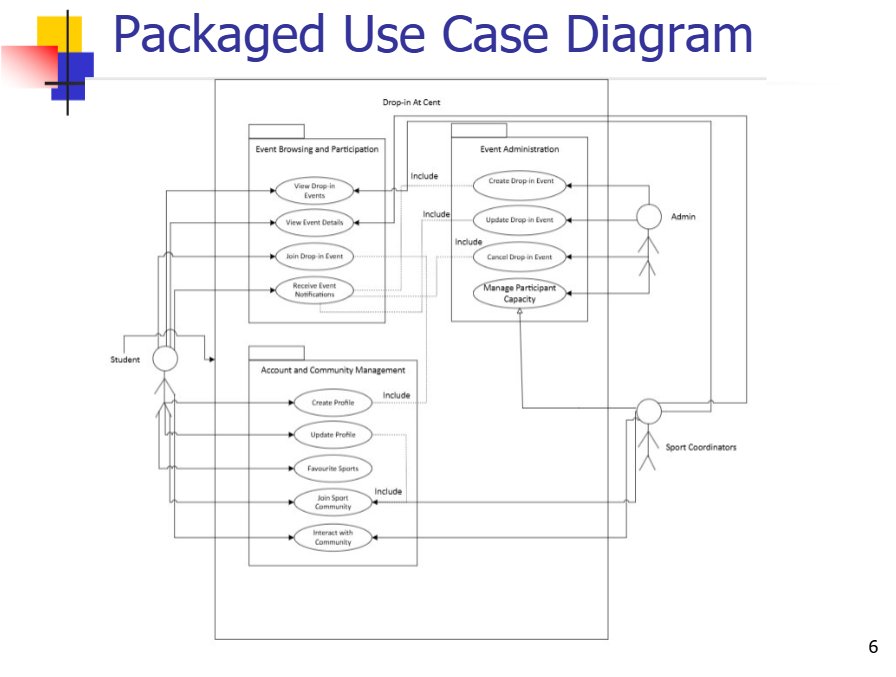
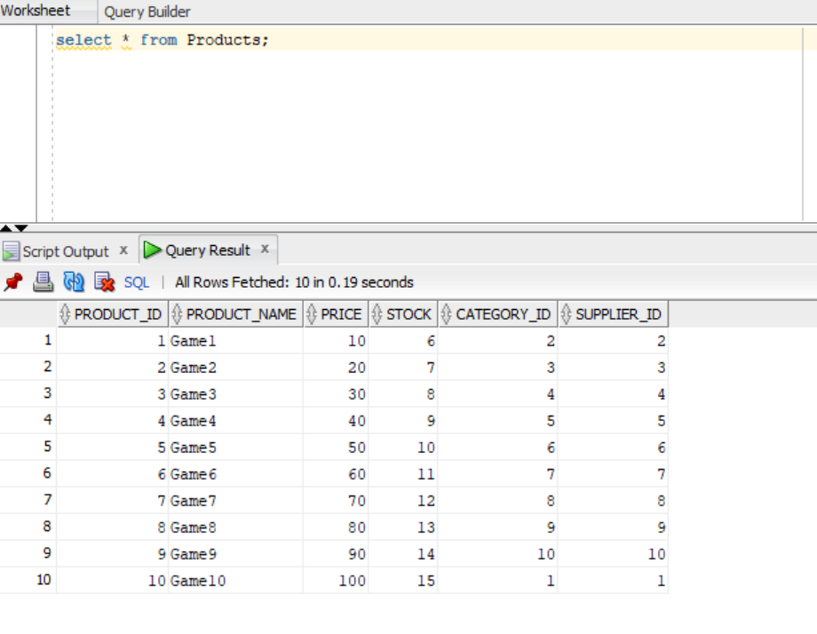
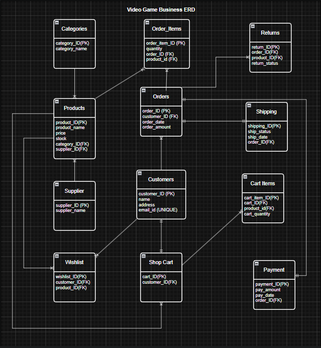

This is an Online Restaurant Ordering Website that I developed using HTML, CSS, and JavaScript in in my second semester at Centennial College. This is a Honduran themed restaurant that allows customers to browse through the multiple pages it consist and order Honduran food online.

This was a group project I made with 4 other classmates in my second semester at Centennial College. We had to make a SRS Document of a new application idea, it consist of diagrams, functional and non-functional requirements. I came up with the idea of Centennial College having a an app that allows students to view and participant on sport ciriculums at all Centennial College Campuses, so that students with similar interest in sports can meet and play sports together.


This was a pair project that I did with a classmate in second semester where we made an sql database for an online video game store. We had to create tables, insert data, and make queries to show the data and also have a visual representation of diagrams of the database.